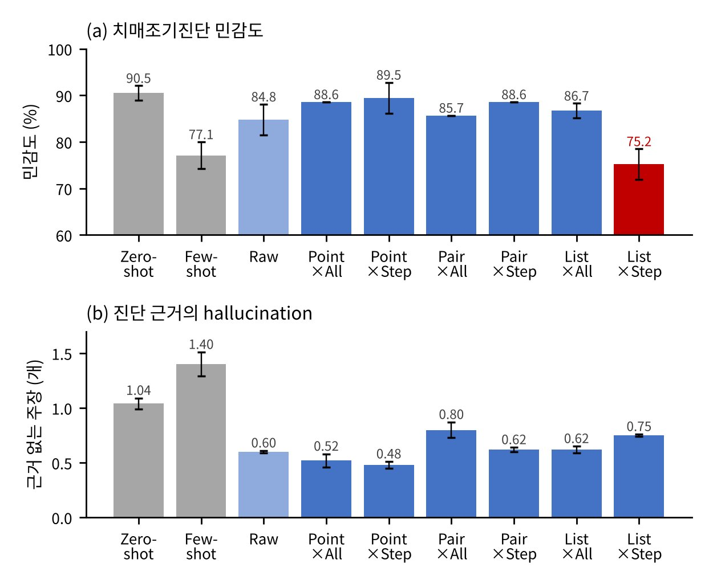

01Problem문제
VR biomarkers have no interpretation guidelines in the literature, so an LLM can neither rely on pretraining nor retrieve them with RAG. The only knowledge available is a handful of cases with a specialist's diagnosis. Can an LLM turn a few labeled cases into a usable diagnostic guideline?
VR 바이오마커는 해석 기준 문헌이 없어 LLM이 사전학습 지식이나 RAG에 기댈 수 없어요. 쓸 수 있는 지식은 전문의 진단이 달린 소수 사례뿐입니다. LLM이 몇 개의 정답 사례로 쓸 만한 진단 가이드라인을 만들 수 있을까요?
02Approach방법
- Label-grounded rationalization정답 기반 추론 생성Give the LLM each case with its true diagnosis and ask it to explain the evidence (rationalization).각 사례와 실제 진단을 함께 주고, 근거를 설명하게 해요(rationalization).
- Synthesize a guideline가이드라인 종합Merge the explanations into one guideline that the diagnostic model reads before judging new patients.설명들을 하나의 가이드라인으로 종합하고, 진단 모델이 새 환자를 판정하기 전에 읽게 해요.
- 3 × 2 factorial design3 × 2 요인설계Case-comparison unit (point / pair / list-wise) × modality integration (all at once / step-wise), against zero-shot, few-shot and raw-case baselines; 3 repetitions; evidence rated by a different LLM.사례 비교 단위(point / pair / list-wise) × 모달리티 통합 방식(동시 / 순차)을 zero-shot, few-shot, 원 사례 조건과 비교했어요. 3회 반복했고, 근거는 다른 LLM이 평가했어요.
6cases used to build the guideline가이드라인 생성에 쓴 사례
53patients evaluated평가 환자 수
84.9 → 91.8%accuracy vs. few-shotfew-shot 대비 정확도
1.40 → 0.52unsupported claims per report리포트당 근거 없는 주장
03Results — explore the conditions결과 — 조건별로 살펴보기
- With a guideline, accuracy rose from 84.9% (few-shot) to 91.8% (Point × All-at-once), and MCI sensitivity from 77.1% to 88.6%.가이드라인을 주면 정확도가 84.9%(few-shot)에서 91.8%(Point × All-at-once)로, MCI 민감도는 77.1%에서 88.6%로 올랐어요.
- List × Step-wise dropped to 75.2% sensitivity (p = .021 vs. List × All): commonalities drawn from the first modality anchored the rule and made it too strict.List × Step-wise는 민감도가 75.2%로 떨어졌어요(List × All 대비 p = .021). 먼저 본 모달리티에서 뽑은 공통점에 고정되는 anchoring 효과로 판정 규칙이 엄격해졌기 때문이에요.
- Better-sounding evidence did not always mean better diagnosis — plausibility and accuracy need to be evaluated separately.근거가 그럴듯하다고 진단이 정확한 건 아니었어요. 그럴듯함과 정확도는 따로 평가해야 해요.

04My contribution나의 기여
- Planned the study, implemented the pipeline, designed the experiment and evaluation, and wrote the paper as first author.연구 기획, 파이프라인 구현, 실험·평가 설계, 논문 작성까지 제1저자로 수행했어요.